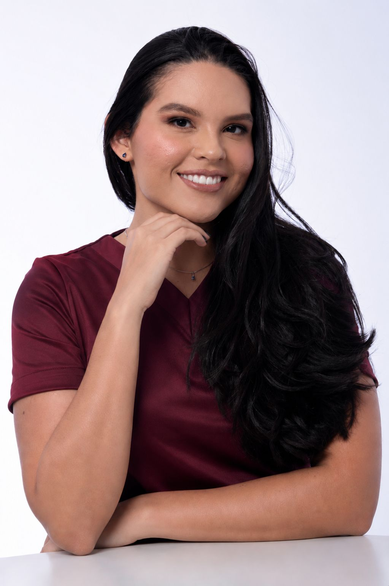
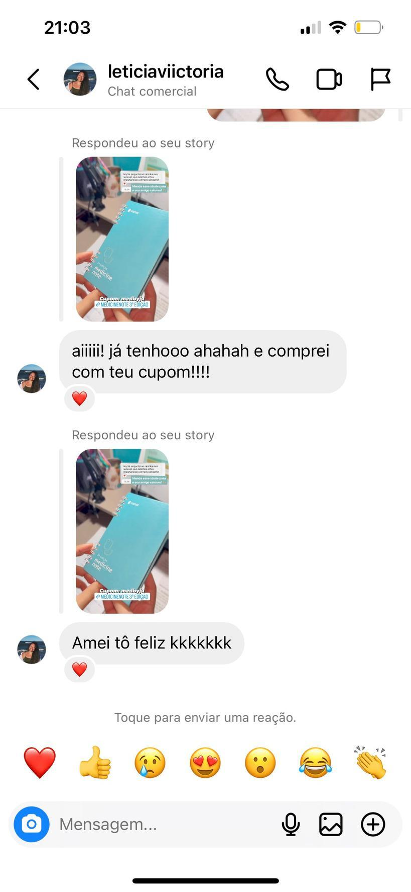
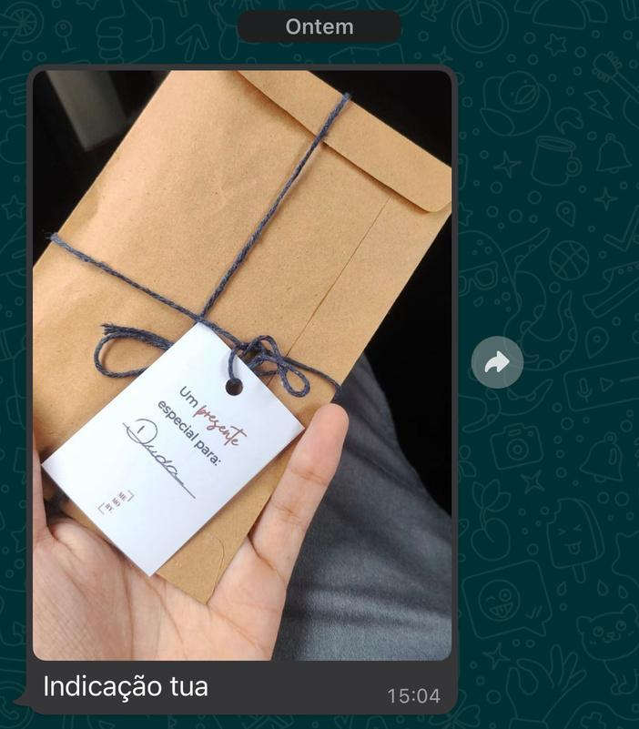
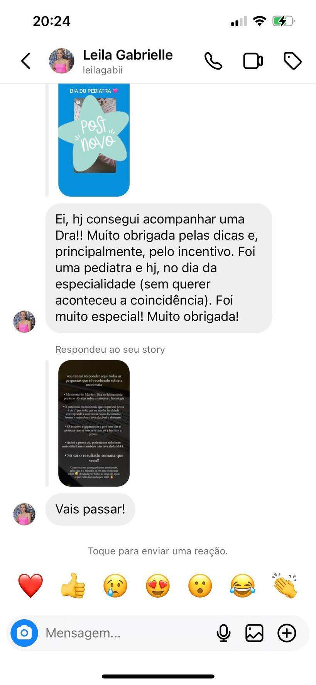
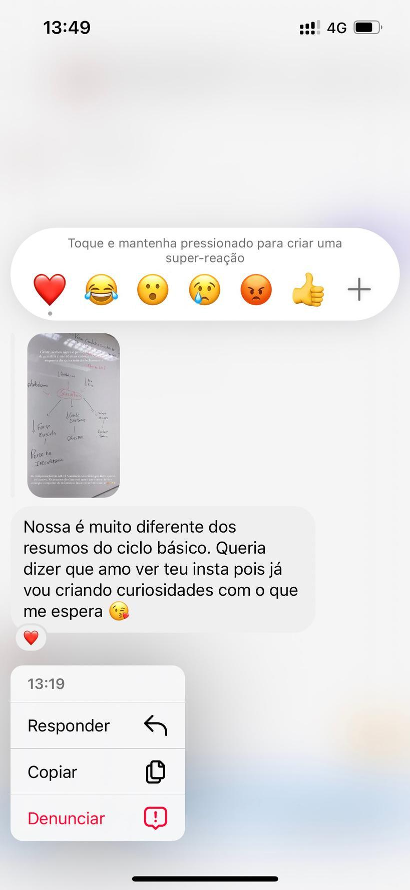
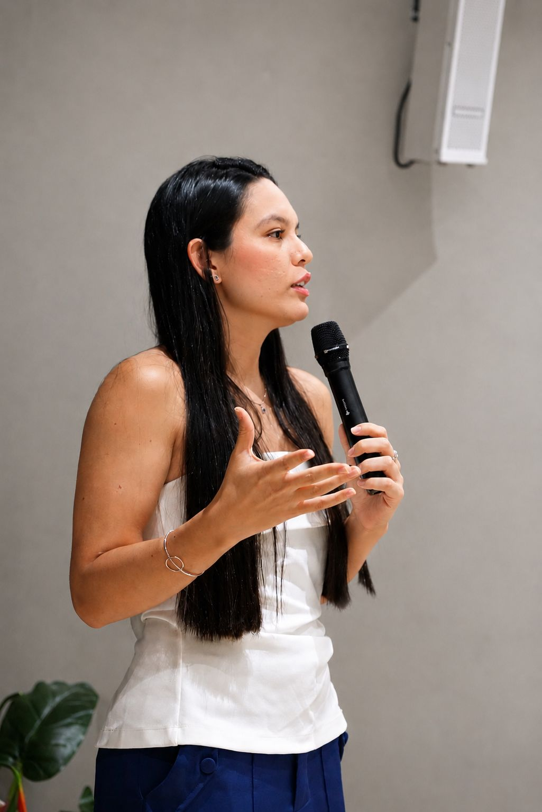

Documento minha trajetória acadêmica e profissional enquanto busco uma vaga de residência. 🏷️ MEDBYJU · @grupomedcof

Criei meu Instagram do zero em 2021, sem pretensão de fazer disso um trabalho integral. Comecei postando minha rotina na faculdade — dicas de estudo, treinos, alimentação — e me tornei praticamente a única blogueira de medicina da faculdade particular mais antiga de Belém.
Com espontaneidade e constância, conquistei espaço, respeito e a confiança de quem me acompanha. Trabalho com verdade e transparência, sempre acessível ao meu público — é isso que transforma audiência em conexão real.
Uma audiência majoritariamente feminina, entre 24 e 34 anos, de Belém e região metropolitana, com forte conexão pelos stories.
Interna de medicina no Centro Universitário do Estado do Pará (CESUPA), 10º período.
5 anos produzindo conteúdo autêntico e constante para o nicho de medicina.
Representando o Grupo MedCof em educação médica, com resultados reais de conexão.
Mais de 150 mil visitas e relação de confiança que fideliza seguidores.
Histórico de gerar engajamento, indicações e novos usuários para marcas parceiras.
Trabalho com marcas alinhadas ao meu propósito, em parcerias de longo prazo.
Alguns dos feedbacks reais que recebo de quem me acompanha no dia a dia:




Acesse os resumos que produzo para os estudos de medicina:
“Assinei o Medcof no 9º período e me ajudou a conciliar o internato com os estudos para residência. As fichas-resumo e o CofExpress foram as melhores coisas já inventadas — entendia o conteúdo de forma rápida e tirava dúvidas com os professores. Sem dúvidas se destaca em relação aos outros cursinhos!”
“Gosto muito da plataforma, principalmente pela organização dos módulos e por poder escolher entre aulas completas e os CofExpress. Preferi o Medcof pela flexibilidade de acesso — no internato organizo a semana conforme meu rodízio. E o suporte é incrível, super rápido!”
“Assinei no 8º semestre e tem sido ideal: me acompanha nos ambulatórios, nas provas da faculdade e na preparação para a residência, sem deixar lacunas. Plataforma fácil de usar e muito organizada 🥰”
“A plataforma organiza minha semana e traz questões para a residência e para o raciocínio clínico nos rodízios. Preferi pela personalização da carga horária, questões comentadas e aulas curtas para o que já domino — perfeito para a correria do internato.”
“Assinei muito por influência da minha amiga (medbyju), vendo na prática a evolução da forma de estudar dela. O Medcof é indispensável para alinhar internato e residência — cronograma personalizado, aulas expressas e comentários das questões diretos e completos. Recomendo!”
“Plataforma intuitiva e direta, com aulas excelentes de médicos especialistas. Recomendo pela flexibilidade — as aulas se ajustam ao calendário do internato — e pela explicação de cada item das questões, por que está certo ou errado.”
“Assinei pouco antes do internato e estou gostando bastante! A lousa semanal me ajudou a manter rotina nos rodízios e me ajudou muito nas provas. O banco de questões é extenso e intuitivo, com comentários completos e até vídeos.”
“Escolher o Medcof foi acertado desde o primeiro dia: suporte individualizado, aulas (minha queridinha é o CofExpress), materiais de apoio e um banco de questões gigantesco. Me preparou tanto para a residência quanto para o curso de medicina em si.”
“Assinei entrando no 5º ano, para o internato e a residência. Preferi pelo banco de questões maravilhoso e pelas opções de cronograma. O CofExpress ajuda muito quando não tenho tempo. E o valor foi bem atrativo.”
“Dentre tantas opções, foi o que mais se adequou ao que eu buscava: aborda as grandes provas e também as da nossa região (Norte). São mais de 80 mil questões e nenhuma aula é superficial — muito bem divididas, ajudam a formar o raciocínio clínico. Pensam no aluno de medicina como um todo.”
“Assinei o Medcof no internato. Sem dúvidas me ajudou demais na aprovação — adorava a plataforma de questões, com estudo dirigido por instituição, provas comentadas e aulas super didáticas, que eu conseguia conciliar com a rotina.”
“Entrei pelo Intensivão precisando de mais direcionamento e vale muito a pena! As questões são muito bem comentadas — fazia uma grande revisão só com uma. As aulas são um show: os especialistas sintetizam o essencial com facilidade enorme. Super recomendo.”
Conteúdo, conexão e crescimento.
Entre no meu grupo do WhatsApp